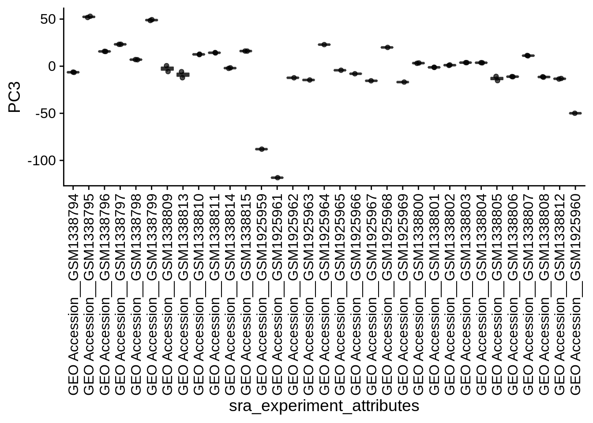
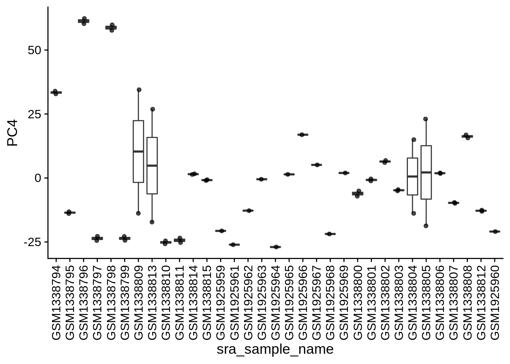
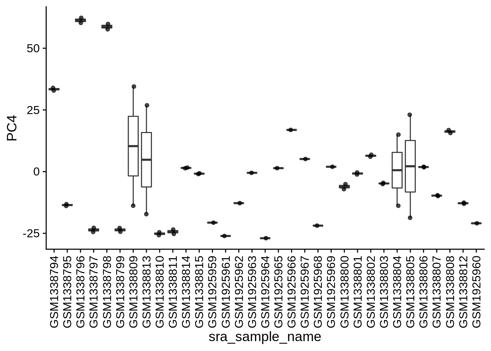

Chapter 2 Covariates
This Covariates chapter provides flexibility to visualize the covariates in the current dataset, such as Age, Group, Genotype, etc. This dynamic table contains several columns, including the PC, Covariate, Type, Significance, p-value, and FDR for each covariate listed.
The PC column shows the principal component that the covariate belongs to. We will see the same covariate name appears in different PC, such as PC1 and PC2, with different Significance.
The Covariate column displays the name of each covariate, and the terms are self-explainable. For example, some covariates are the sample annotation of the dataset, such as Age, Group, Genotype. On the other hand, some covariates are related to the data analysis steps, such as the metrics from the genome mapping step. If the data is downloaded from GEO and incorporated into the pipeline using recount3, metrics from the recount3 pipeline will also show up in the Covariate column.
The Type column indicates the type of each covariate. Covariates can be Numeric or Categorical types.
The Significance column lists the ANOVA FDR information between each covariate v.s. PC. For Numeric covariates, an r value is associated with each ANOVA test. However, for Categorical covariates, only FDR values are displayed.
The last two columns, P-value and FDR, indicate the results of statistical tests (P-value) and adjusted P-values.
2.1 List of covariates
| PC | Covariate | Type | Significance | P-value | FDR |
|---|---|---|---|---|---|
| PC3 | sra_sample_acc_x | Categorical | sra_sample_acc_x vs. PC3 ANOVA fdr: 8.4e-25 | 0.0000000 | 0.0000000 |
| PC3 | sra_experiment_acc | Categorical | sra_experiment_acc vs. PC3 ANOVA fdr: 8.4e-25 | 0.0000000 | 0.0000000 |
| PC3 | sra_experiment_title | Categorical | sra_experiment_title vs. PC3 ANOVA fdr: 8.4e-25 | 0.0000000 | 0.0000000 |
| PC3 | sra_experiment_attributes | Categorical | sra_experiment_attributes vs. PC3 ANOVA fdr: 8.4e-25 | 0.0000000 | 0.0000000 |
| PC3 | sra_sample_name | Categorical | sra_sample_name vs. PC3 ANOVA fdr: 8.4e-25 | 0.0000000 | 0.0000000 |
| PC3 | sra_sample_title | Categorical | sra_sample_title vs. PC3 ANOVA fdr: 8.4e-25 | 0.0000000 | 0.0000000 |
| PC3 | recount_pred_sample_acc_y | Categorical | recount_pred_sample_acc_y vs. PC3 ANOVA fdr: 8.4e-25 | 0.0000000 | 0.0000000 |
| PC1 | sra_sample_acc_x | Categorical | sra_sample_acc_x vs. PC1 ANOVA fdr: 1.8e-16 | 0.0000000 | 0.0000000 |
| PC1 | sra_experiment_acc | Categorical | sra_experiment_acc vs. PC1 ANOVA fdr: 1.8e-16 | 0.0000000 | 0.0000000 |
| PC1 | sra_experiment_title | Categorical | sra_experiment_title vs. PC1 ANOVA fdr: 1.8e-16 | 0.0000000 | 0.0000000 |
| PC1 | sra_experiment_attributes | Categorical | sra_experiment_attributes vs. PC1 ANOVA fdr: 1.8e-16 | 0.0000000 | 0.0000000 |
| PC1 | sra_sample_name | Categorical | sra_sample_name vs. PC1 ANOVA fdr: 1.8e-16 | 0.0000000 | 0.0000000 |
| PC1 | sra_sample_title | Categorical | sra_sample_title vs. PC1 ANOVA fdr: 1.8e-16 | 0.0000000 | 0.0000000 |
| PC1 | recount_pred_sample_acc_y | Categorical | recount_pred_sample_acc_y vs. PC1 ANOVA fdr: 1.8e-16 | 0.0000000 | 0.0000000 |
| PC4 | sra_sample_acc_x | Categorical | sra_sample_acc_x vs. PC4 ANOVA fdr: 1.7e-04 | 0.0000685 | 0.0001697 |
| PC4 | sra_experiment_acc | Categorical | sra_experiment_acc vs. PC4 ANOVA fdr: 1.7e-04 | 0.0000685 | 0.0001697 |
| PC4 | sra_experiment_title | Categorical | sra_experiment_title vs. PC4 ANOVA fdr: 1.7e-04 | 0.0000685 | 0.0001697 |
| PC4 | sra_experiment_attributes | Categorical | sra_experiment_attributes vs. PC4 ANOVA fdr: 1.7e-04 | 0.0000685 | 0.0001697 |
| PC4 | sra_sample_name | Categorical | sra_sample_name vs. PC4 ANOVA fdr: 1.7e-04 | 0.0000685 | 0.0001697 |
| PC4 | sra_sample_title | Categorical | sra_sample_title vs. PC4 ANOVA fdr: 1.7e-04 | 0.0000685 | 0.0001697 |
| PC4 | recount_pred_sample_acc_y | Categorical | recount_pred_sample_acc_y vs. PC4 ANOVA fdr: 1.7e-04 | 0.0000685 | 0.0001697 |
| PC1 | sra_run_published | Categorical | sra_run_published vs. PC1 ANOVA fdr: 5.2e-03 | 0.0021834 | 0.0051608 |
| PC2 | recount_qc_bc_frag_mean_length | Numeric | recount_qc_bc_frag_mean_length vs. PC2: r=0.504; fdr=2.9e-02 | 0.0000862 | 0.0289780 |
| PC1 | sra_run_center_name | Categorical | sra_run_center_name vs. PC1 ANOVA fdr: 5.2e-02 | 0.0231182 | 0.0522672 |
| PC2 | sra_run_center_name | Categorical | sra_run_center_name vs. PC2 ANOVA fdr: 6.2e-02 | 0.0283930 | 0.0615181 |
2.2 Plots of significant covariates
Loop through the significant covariates and product all plots.
 
